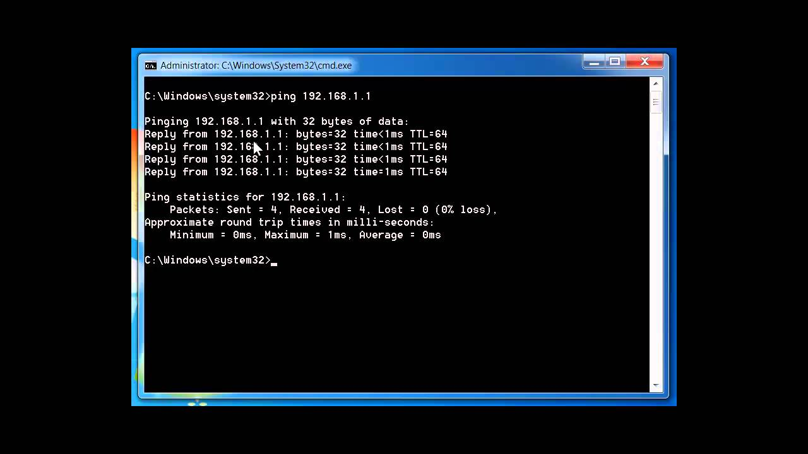
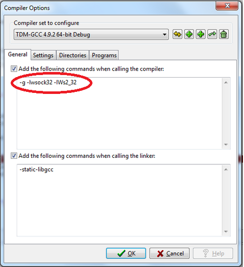
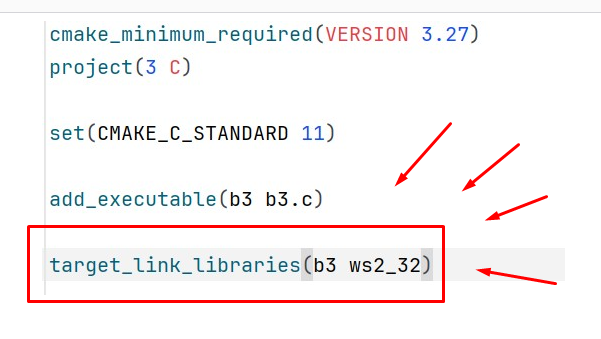

BLOK 3
Tu už treba všetko :))
Ako urobiť BLOK 3?
V treťom bloku cvičení budeme komunikovať naprieč internetom so serverom. Vašou úlohou bude naprogramovať “klientský program” schopný posielať a prijímať textové správy. Jedná sa o jeden rozsiahlejší projekt, ktorý budete riešiť počas celého tretieho bloku. V prvej fáze budete mať za úlohu pripojiť sa na server a identifikovať sa svojím osobným číslom. Ďalej musíte vedieť prijať správu zo servera a zobraziť ju na obrazovke. Ak sa Vám to podarí, tak Vás Morfeus osloví Vaším vlastným menom a zadá Vám úlohy, ktoré musíte splniť. Ak sa Vám podarí všetky splniť, plný počet 12 bodov za tretí blok je Váš :)
NUTNÝ MALÝ TEORETICKÝ ÚVOD (aka yapping)
Komunikácia počítačov cez internet je veľmi zjednodušene povedané len posielanie jednotiek a núl z Vášho počítača na počítač na druhej strane a opačne. Je to samozrejme oveľa sofistikovanejšie, no pre potreby tohto projektu Vám stačí vedieť, že budete komunikovať prostredníctvom protokolu TCP/IP, ktorý zabezpečuje, aby sa Vaše jednotky a nuly dostali na počítač na druhej strane v poriadku.
Aby Váš počítač vedel, na ktorý počítač z miliónov strojov na celom svete má dáta poslať, musí existovať nejaký systém adresovania. Funguje to podobne ako pošta – obálka Vám príde na konkrétnu ulicu, do konkrétnej schránky. Z hľadiska tejto analógie je v prípade internetu ulica a číslo domu tzv. IP adresa, a konkrétna schránka v rámci domu sa nazýva port. Tak ako v paneláku býva viacero ľudí, tak aj vo Vašom počítači môže bežať viacero aplikácií, ktoré prostredníctvom internetu komunikujú. Váš operačný systém preto musí vedieť, ktorej aplikácii má čo poslať. Práve na to slúži číslo portu.
Teraz zistite Vašu IP adresu. Spustite si konzolu (program, v ktorom ste kompilovali úvodné zadanie semestra) a napíšte:
ipconfig
Vo výpise viete nájsť IP adresu. Ako vidíte, skladá sa zo štyroch bajtov oddelených bodkami:
192.168.0.132
Ďalej si vyskúšajte príkaz ping. Pomocou neho viete otestovať funkčnosť servera, ktorý má takéto testovanie povolené na svojej strane. Skúste otestovať napríklad:
ping www.google.com
Výstup bude vyzerať podobne tomuto (Všimnite si ako krátko celá operácia trvá. Jednotky a nuly sa dostanú z Vášho počítača na server google-u a späť v zlomku sekundy):
ZÁKLADNÝ POHĽAD NA ZADANIE
- Pripojiť sa na server s IP adresou 147.175.115.34 na port 777 pomocou protokolu TCP.
- Poslať úvodnú správu (zobraziť ju v konzole).
- Prijať odpoveď (zobraziť ju v konzole).
- Postupovať podľa ďalších príkazov prijatých v komunikácii so serverom. Komunikácia funguje tak, že vždy po tom, čo Vám server niečo pošle očakáva nejakú odpoveď od Vás.
(bodové hodnotenie je komplexné a bude zhrnuté dolu, hodnotí sa celý projekt, štruktúra a funkčnosť kódu, vizuálna stránka, ako aj splnenie úloh)
SOCKETY
Na komunikáciu cez internet z Vášho programu budete používať tzv. sockety, v OS Windows budeme používať implementáciu Winsock. Podpora v rámci predmetu sa poskytuje výlučne pre Windows. Kto si však trúfa, môže skúsiť v operačnom systéme na báze Linux-u. Príklad na implementáciu socket komunikácie je tu. Vo Visual Studio treba pridať nasledovné knižnice:
Ak pracujete v Dev-C++, musíte nalinkovať knižnice cez Tools -> Compiler Options a tam napísať to, čo je na tomto screenshote.
Ak pracujete v CLione, musíte si nalinkovať knižnice modifikovaním CMakeLists.txt a doplnit target libraries ako v tomto screenshote.

#include
#include
#include
#pragma comment(lib, "Ws2_32.lib")
1. Úvodné nastavenia
Najprv treba nastaviť základné parametre štruktúr socketu, IP adresu servera a port, na ktorom chcete komunikovať. Prejdite si každý riadok kódu, nepracujte len systémom “copy/paste”.
//uvodne nastavovacky
WSADATA wsaData; //struktura WSADATA pre pracu s Winsock
int iResult;
// Initialize Winsock
iResult = WSAStartup(MAKEWORD(2, 2), &wsaData); //zakladna inicializacia
if (iResult != 0) //kontrola, ci nestala chyba
{
printf(“WSAStartup failed: %d\n”, iResult);
return 1;
}
struct addrinfo *result = NULL, *ptr = NULL; //struktura pre pracu s adresami
struct addrinfo hints;
ZeroMemory(&hints, sizeof(hints));
hints.ai_family = AF_UNSPEC;
hints.ai_socktype = SOCK_STREAM;
hints.ai_protocol = IPPROTO_TCP; //pracujeme s protokolom TCP/IP
// Resolve the server address and port
iResult = getaddrinfo(“tu ma byt IP adresa servera”, “tu ma byt port”, &hints, &result);
if (iResult != 0) //kontrola, ci nenastala chyba
{
printf(“getaddrinfo failed: %d\n”, iResult);
WSACleanup();
return 1;
}
else
printf(“getaddrinfo didn’t fail…\n”);
2. Pripojenie sa
V tejto časti kódu sa snažíme pripojiť na server spôsobom, ktorý sme definovali v časti predošlej.
//vytvorenie socketu a pripojenie sa
SOCKET ConnectSocket = INVALID_SOCKET;
// Attempt to connect to the first address returned by
// the call to getaddrinfo
ptr = result;
// Create a SOCKET for connecting to server => pokus o vytvorenie socketu
ConnectSocket = socket(ptr->ai_family, ptr->ai_socktype,ptr->ai_protocol);
if (ConnectSocket == INVALID_SOCKET) //kontrola, ci nenastala chyba
{
printf(“Error at socket(): %ld\n”, WSAGetLastError());
freeaddrinfo(result);
WSACleanup();
return 1;
}
else
printf(“Error at socket DIDN’T occur…\n”);
// Connect to server. => pokus o pripojenie sa na server
iResult = connect(ConnectSocket, ptr->ai_addr, (int)ptr->ai_addrlen);
if (iResult == SOCKET_ERROR) //kontrola, ci nenastala chyba
printf(“Not connected to server…\n”);
else
printf(“Connected to server!\n”);
if (iResult == SOCKET_ERROR) //osetrenie chyboveho stavu
{
closesocket(ConnectSocket);
ConnectSocket = INVALID_SOCKET;
WSACleanup();
return 1;
}
Sleep(250);
3. Posielanie dát
Pri posielaní dát v zásade pracujeme z reťazcami ako aj v predošlých blokoch. Posielame znaky, čo sú v konečnom dôsledku jednotky a nuly, ktoré server prijme. Musíte si zvoliť vhodnú dĺžku reťazca, za každým ho naplniť znakmi, ktoré chcete poslať a následne “posunút” reťazec vytvorenému socketu, ktorý sa pokúsi dáta poslať.
//posielanie
char sendbuf[/*treba zavolit vhodnu velkost, napr. 4096*/]; //buffer (v zasade retazec), kam sa budu ukladat data, ktore chcete posielat
iResult = send(ConnectSocket, sendbuf, (int)strlen(sendbuf), 0);
if (iResult == SOCKET_ERROR)
{
printf(“send failed: %d\n”, WSAGetLastError());
closesocket(ConnectSocket);
WSACleanup();
return 1;
}
printf(“Bytes Sent: %ld\n”, iResult); //vypisanie poctu odoslanych dat
4. Prijímanie dát
Aby Vám server vedel odpovedať, musíte si nachystať buffer, do ktorého si budete ukladať dáta, ktoré Vám pošle. V našom prípade sa bude takmer vždy jednať o znaky, takže si ich môžete ukladať do reťazca.
//prijimanie
#define DEFAULT_BUFLEN 4096 //makro, kde definujeme velkost prijimacieho buffera
int recvbuflen = DEFAULT_BUFLEN;
char recvbuf[DEFAULT_BUFLEN];
iResult = recv(ConnectSocket, recvbuf, recvbuflen, 0); //funkcia na príjimanie
if ( iResult > 0 )
printf(“Bytes received: %d\n”, iResult); //prisli validne data, vypis poctu
else if ( iResult == 0 )
printf(“Connection closed\n”); //v tomto pripade server ukoncil komunikaciu
else
printf(“recv failed with error: %d\n”, WSAGetLastError()); //ina chyba
5. Zavretie socketu
Po ukončení komunikácie je potrebné socket zavrieť.
//zavretie socketu
closesocket(ConnectSocket);
WSACleanup();
Načítanie vstupu s konzoly aj s medzerami
Funkcia scanf() Vám štandardne ukončí načítanie reťazca zo vstupu po výskyte prvej medzery. Ak chcete uložiť vstup vrátane medzier je lepšie použiť funkciu fgets():
- char name[1024];
- int size = 1024;
- fgets(name, size, stdin);
- printf(“%s\n”, name);
Práca s prijatými dátamii
Z pohľadu socketu sú prijaté dáta len postupnosťou bajtov, nie reťazce. V prijatých dátach sa ani nemusí nachádzať ukončovacia nula (všetci viete, čím je ukončený reťazec, však?). Ako teda zistiť, kedy “končia” dáta, ktoré Vám server posiela v našom prípade? Vo väčšine správ sú ukončené znakom ‘\n’. Aby sa Vám v konzole pri vypísaní prijatých dát nevyskytol nejaký neporiadok, musíte tento znak nahradiť ukončovacou nulou ‘\0’. Môžete na to použiť napríklad túto funkciu. Lokalizujete znak ‘\n’ a n hradíte ho ukončovacou nulou. V jednom špecifickom prípade sa však nebudete môcť spoľahnút ani na znak ‘\n’. Vtedy budete musieť ukončovaciu nulu umiestniť manuálne na základe informácie, ktorá Vám bude včas doručená.
Ak vám vo Windows 11 nefunguje umiestňovanie znakov na požadované súradnice
Môžete posúvať písmená doprava o požadovaný počet medzier napríklad takto: printf(“%60cMorpheus:”, ‘ ‘);
BODOVÉ OHODNOTENIE
Na získanie plného počtu bodov sa musíte dostať až po poslednú správu zo servera. Úlohy musíte mať riešené algoritmicky – predovšetkým úlohu s rozdeľovaním textu na ľavú a pravú stranu, a úlohu s prvočíslami (tie sú najvyššie bodovo hodnotené). Úloha s prvočíslami musí fungovať pre akúkoľvek dlhú správu.